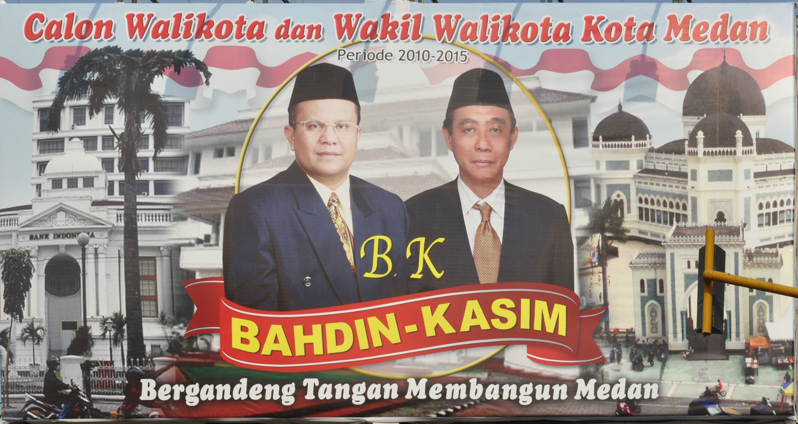

Example: Image analysis of campaign posters
example_images.RmdThis example demonstrates multimodal analysis using
qlm_code() to extract structured information from images.
We analyze Indonesian mayoral campaign posters from Fox (2023),
extracting details about candidates, visual elements, and symbolic
content that would traditionally require manual human coding.
Loading packages and data
First, we identify the image files to analyze:
# Get all image files from the data folder
image_files <- list.files("data/images/",
pattern = "\\.jpg$",
full.names = TRUE)
cat("Found", length(image_files), "campaign poster images:\n")## Found 5 campaign poster images:## [1] "Bahdin.jpg" "maulana.jpg" "Sigit_Pramono.jpg"
## [4] "Sofyan_tan.jpg" "Usman_Siregar.jpg"Let’s preview one of the campaign posters:

Defining the image analysis codebook
We create a codebook that operationalizes the annotation task. The schema defines what information to extract from each poster:
# Define a comprehensive image analysis codebook
codebook_posters <- qlm_codebook(
name = "Campaign Poster Analysis",
instructions = paste(
"You are a political scientist analyzing campaign posters from an",
"Indonesian mayoral election. Examine each image carefully and",
"extract the requested information about candidates, visual elements,",
"and symbolic content."
),
schema = ellmer::type_object(
mayoral_candidate = ellmer::type_string(
"Name of the mayoral candidate, or 'unknown' if not visible"
),
deputy_candidate = ellmer::type_string(
"Name of the deputy mayoral candidate, or 'unknown' if not visible"
),
text_translation = ellmer::type_string(
"English translation of the Indonesian text in the poster"
),
clothing_description = ellmer::type_string(
"Description of the clothing the candidates are wearing"
),
indonesian_flag = ellmer::type_boolean(
"Whether there are visual elements representing the red and white Indonesian flag"
),
religious_buildings = ellmer::type_string(
"Any religious buildings present and their religion, or 'none' if absent"
),
party_logos = ellmer::type_boolean(
"Whether there are any party logos in the poster"
),
candidate_percentage = ellmer::type_integer(
"Estimated percentage of poster taken up by faces and names of candidates (0-100)"
),
facial_expression = ellmer::type_enum(
c("smiling", "serious", "neutral", "mixed"),
"Description of candidates' facial expressions"
)
),
role = "You are an expert in political communication and visual analysis.",
input_type = "image"
)
# View the codebook structure
codebook_posters## quallmer codebook: Campaign Poster Analysis
## Input type: image
## Role: You are an expert in political communication and visual anal...
## Instructions: You are a political scientist analyzing campaign posters fro...
## Output schema:ellmer::TypeObject
## Levels:
## mayoral_candidate: nominal
## deputy_candidate: nominal
## text_translation: nominal
## clothing_description: nominal
## indonesian_flag: nominal
## religious_buildings: nominal
## party_logos: nominal
## candidate_percentage: ordinal
## facial_expression: nominalThe codebook includes: - Factual information: Candidate names, text translations - Visual elements: Clothing, flags, religious symbols, party logos - Compositional features: Candidate prominence (percentage), facial expressions
Coding images using Gemini 3 Pro Preview
Multimodal models like Gemini 3 Pro Preview can analyze images and
extract structured information. We use qlm_code() with
image file paths:
# Apply image analysis using qlm_code()
coded_posters <- qlm_code(
image_files,
codebook = codebook_posters,
model = "google_gemini/gemini-3-pro-preview",
name = "campaign_posters_gemini3pro",
notes = "Analysis of Indonesian mayoral campaign posters from Fox (2023)",
include_cost = TRUE
)
# Add filenames to results
coded_posters$.filename <- basename(image_files)
# Save results
saveRDS(coded_posters, "data/coded_posters_gemini3pro.rds")Examining the results
Let’s view the extracted information in a table:
# Display key results
coded_posters %>%
select(.filename, mayoral_candidate, deputy_candidate, facial_expression,
indonesian_flag, party_logos, candidate_percentage) %>%
kable(
col.names = c("File", "Mayoral Candidate", "Deputy", "Expression",
"Flag", "Logos", "% Candidates"),
caption = "Campaign Poster Analysis Results"
)| File | Mayoral Candidate | Deputy | Expression | Flag | Logos | % Candidates |
|---|---|---|---|---|---|---|
| Bahdin.jpg | Bahdin | Kasim | neutral | TRUE | FALSE | 35 |
| maulana.jpg | Maulana | Arif | smiling | FALSE | FALSE | 65 |
| Sigit_Pramono.jpg | Sigit Pramono Asri, SE | Ir. Hj. Nurlisa Ginting, M.Sc | smiling | TRUE | TRUE | 45 |
| Sofyan_tan.jpg | dr. Sofyan Tan | Nelly Armayanti, SP, MSP | smiling | TRUE | TRUE | 65 |
| Usman_Siregar.jpg | Usman Su ‘Jabrik’ Siregar | Ir Gunawan Ang SH | neutral | FALSE | FALSE | 50 |
Total cost for analyzing 5 images: (May not display correctly for a preview model)
## Total cost: $0Text translations
The LLM can translate Indonesian text found in the posters:
coded_posters %>%
select(.filename, text_translation) %>%
kable(
col.names = c("File", "Text Translation"),
caption = "Translated Text from Posters"
)| File | Text Translation |
|---|---|
| Bahdin.jpg | Candidate for Mayor and Deputy Mayor of Medan City Period 2010-2015. Bahdin-Kasim. Joining hands to build Medan. |
| maulana.jpg | MARI (Maulana - Arif). Let’s… Fix Medan, Improve the Image. Continue what was delayed. Candidate for Mayor and Deputy Mayor of Medan Period 2010 - 2015 |
| Sigit_Pramono.jpg | SHINING: Together with Sigit-Nurlisa for a Prosperous Medan. God willing we definitely can! Asking for prayers & support to become Mayor & Deputy Mayor of Medan 2010-2015. Free Ambulance Service. |
| Sofyan_tan.jpg | WE CAN TOO..!! dr. Sofyan Tan, Nelly Armayanti, SP, MSP. Candidate for Mayor & Deputy Mayor of Medan, Period 2010-2015. Building an Organized, Humane, Prosperous and Modern Medan City. Asking for Blessings & Support. |
| Usman_Siregar.jpg | We are ‘Medan Kids’ Uncle, Want to be the PEOPLE’S MAYOR Pair from Independent. Usman Su ‘Jabrik’ Siregar Prospective Mayor of Medan 2010-2015 & Ir Gunawan Ang SH Prospective Deputy Mayor of Medan 2010-2015. Bored with nonsense talkers? Support Us Uncle! ‘Medan Kids’ who were born and raised in Medan…! We Wait for a Photocopy of Your ID Card, Now! at Jl. Ismailiyah No. 17/25C Komat I - Medan |
Visual elements
Summary of visual elements across all posters:
# Summarize visual elements
cat("Indonesian flag elements:",
sum(coded_posters$indonesian_flag, na.rm = TRUE),
"of", nrow(coded_posters), "posters\n")## Indonesian flag elements: 3 of 5 posters
cat("Party logos present:",
sum(coded_posters$party_logos, na.rm = TRUE),
"of", nrow(coded_posters), "posters\n")## Party logos present: 2 of 5 posters
cat("\nFacial expressions:\n")##
## Facial expressions:##
## smiling serious neutral mixed
## 3 0 2 0
cat("\nCandidate prominence (% of poster):\n")##
## Candidate prominence (% of poster):
cat("Range:", min(coded_posters$candidate_percentage, na.rm = TRUE), "-",
max(coded_posters$candidate_percentage, na.rm = TRUE), "%\n")## Range: 35 - 65 %## Mean: 52 %Detailed view of one poster
Let’s examine the complete analysis for one poster:
# Select the first poster for detailed view
poster_detail <- coded_posters[1, ]
cat("=== Detailed Analysis ===\n\n")## === Detailed Analysis ===
cat("File:", poster_detail$.filename, "\n\n")## File: Bahdin.jpg
cat("Mayoral candidate:", poster_detail$mayoral_candidate, "\n")## Mayoral candidate: Bahdin
cat("Deputy candidate:", poster_detail$deputy_candidate, "\n")## Deputy candidate: Kasim
cat("Text translation:", poster_detail$text_translation, "\n\n")## Text translation: Candidate for Mayor and Deputy Mayor of Medan City Period 2010-2015. Bahdin-Kasim. Joining hands to build Medan.
cat("Clothing:", poster_detail$clothing_description, "\n")## Clothing: Both candidates are wearing dark formal suits, ties, and black peci caps.
cat("Religious buildings:", poster_detail$religious_buildings, "\n\n")## Religious buildings: Great Mosque of Medan (Islamic)
cat("Indonesian flag present:", poster_detail$indonesian_flag, "\n")## Indonesian flag present: TRUE
cat("Party logos present:", poster_detail$party_logos, "\n")## Party logos present: FALSE
cat("Candidate percentage:", poster_detail$candidate_percentage, "%\n")## Candidate percentage: 35 %
cat("Facial expression:", poster_detail$facial_expression, "\n")## Facial expression: 3Comparing to other models (optional)
You can code the same images with different models to compare results:
# Try with GPT-4o for comparison
coded_gpt4o <- qlm_code(
image_files,
codebook = codebook_posters,
model = "openai/gpt-4o",
name = "campaign_posters_gpt4o"
)
# Compare agreement between models
qlm_compare(
coded_posters,
coded_gpt4o,
by = "facial_expression",
level = "nominal"
)Creating an audit trail
Document the complete analysis:
qlm_trail(coded_posters, path = "poster_analysis")This creates two files:
-
poster_analysis.rds: Complete trail object containing the coding run, codebook, and metadata -
poster_analysis.qmd: Quarto document with full audit trail documentation
Summary
This example demonstrates:
- Multimodal analysis: Using vision-language models to analyze images
- Structured extraction: Defining a schema to extract specific information
- Scalability: Analyzing multiple images in batch
- Cost efficiency: Modern multimodal models are increasingly affordable
- Reproducibility: All analysis is documented and can be replicated
Multimodal LLMs open new possibilities for qualitative researchers working with visual data at scale, from political communication to social media analysis.
References
Fox, C. A. (2023). Ethnic campaign appeals: To bond, bridge, or bypass? Political Communication, 40(1), 92–114. https://doi.org/10.1080/10584609.2022.2132331